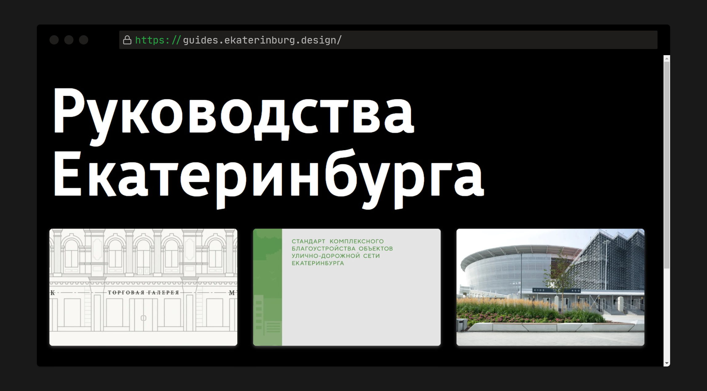
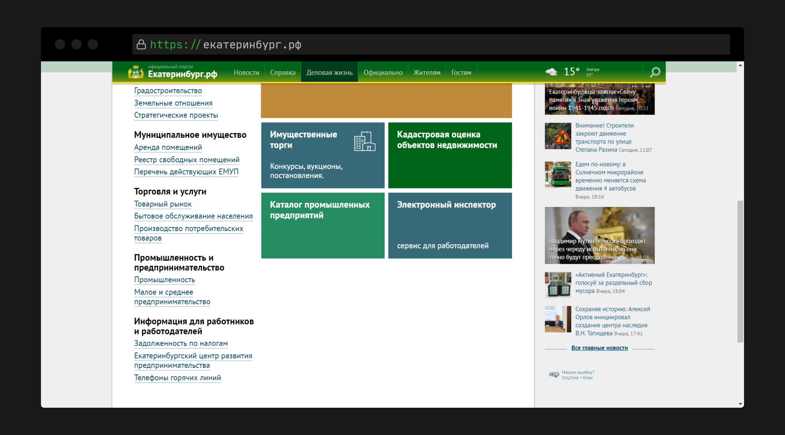
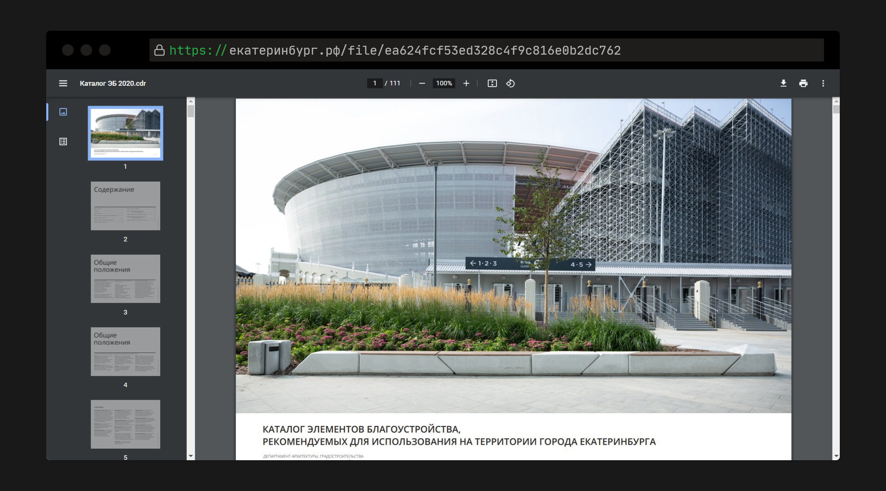
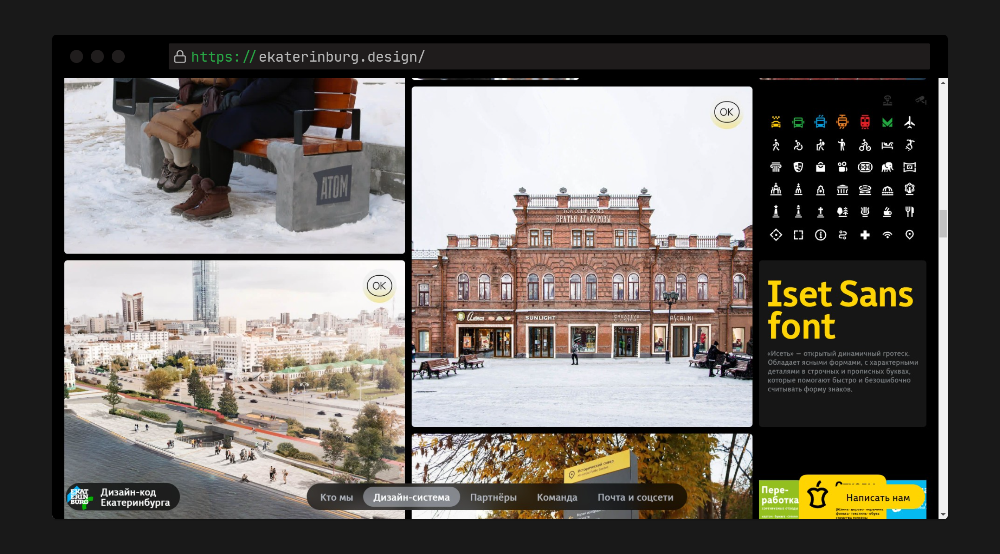
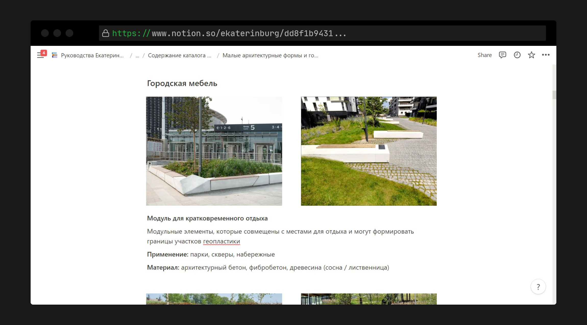
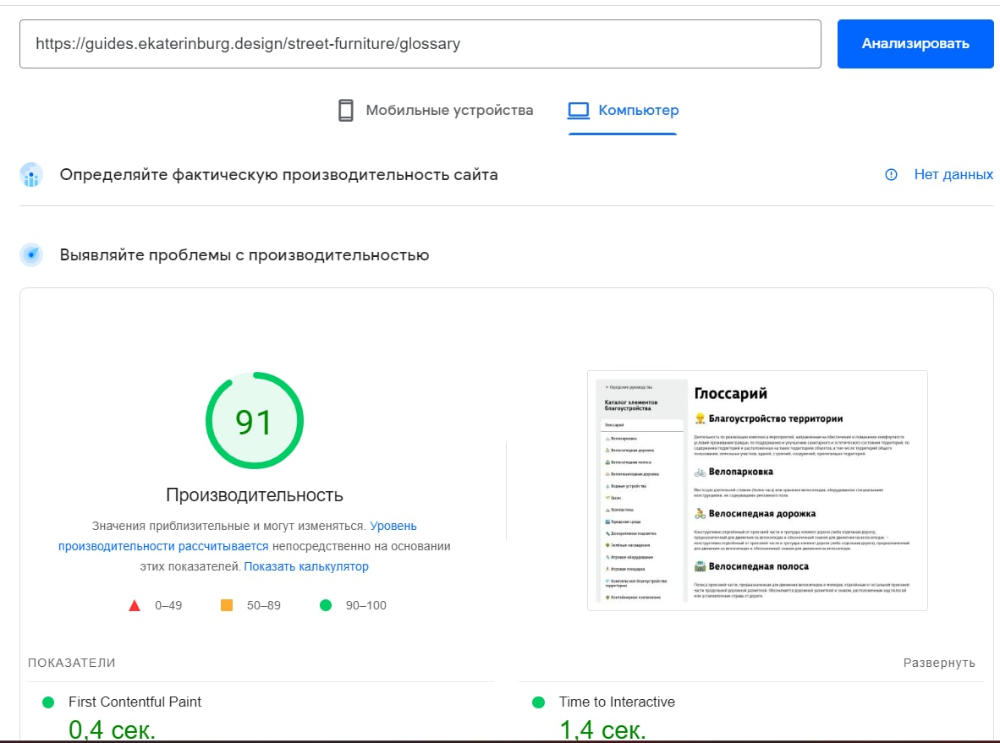
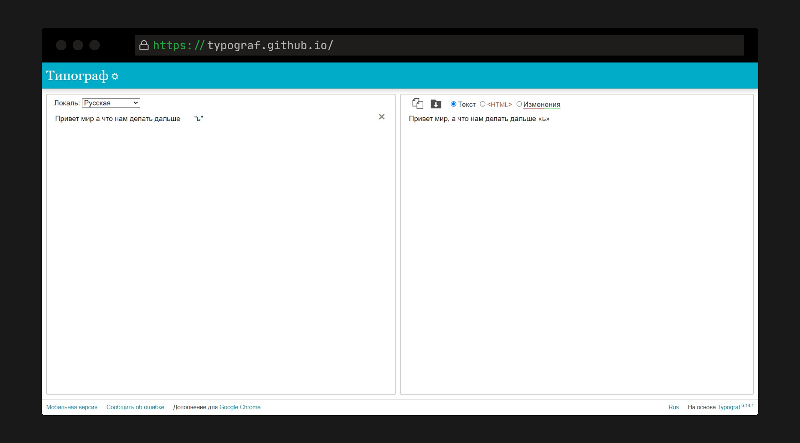
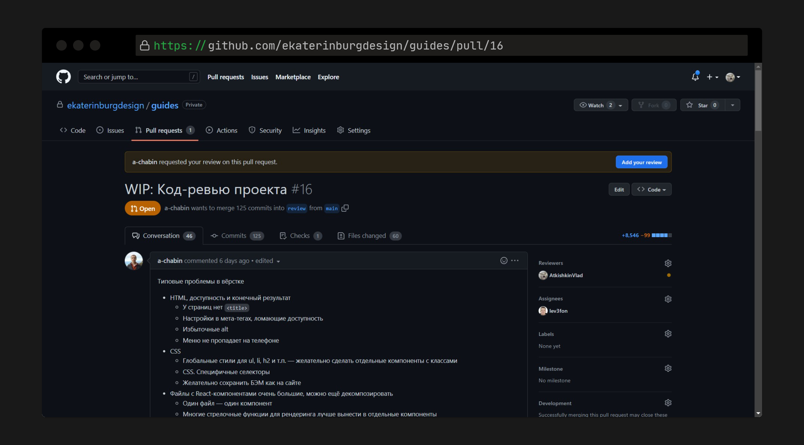

Проблемы
Расположение

Просмотр и редактирование

Решение
Notion как админка


Реализация
Frontend
NextJS

Typograf

Адаптивность
Доступность
Backend
Django
Docker
PostgreSQL
Документация на API
Совместная работа
Используем eslint и prettier
Используем GitHub Actions для автоматизации
Просим код-ревью у наставников :)
